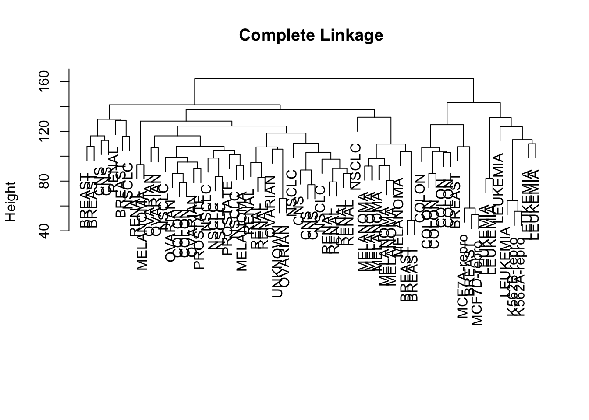
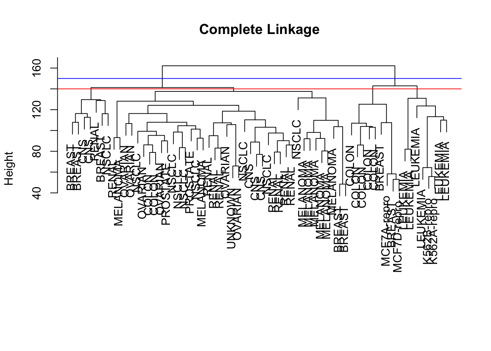
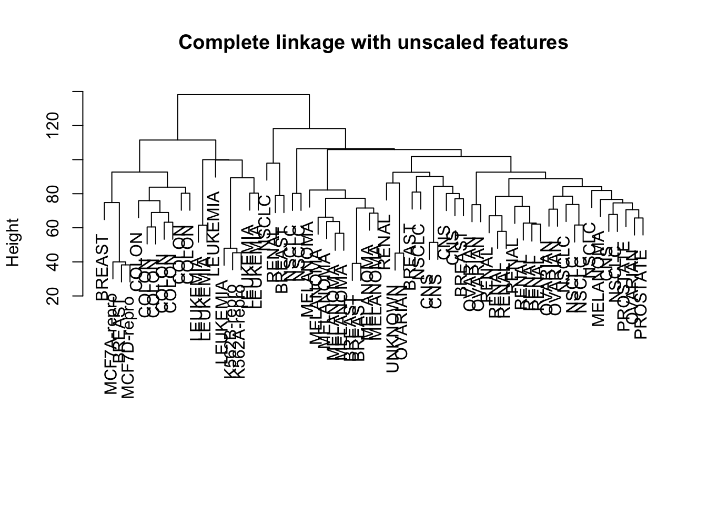
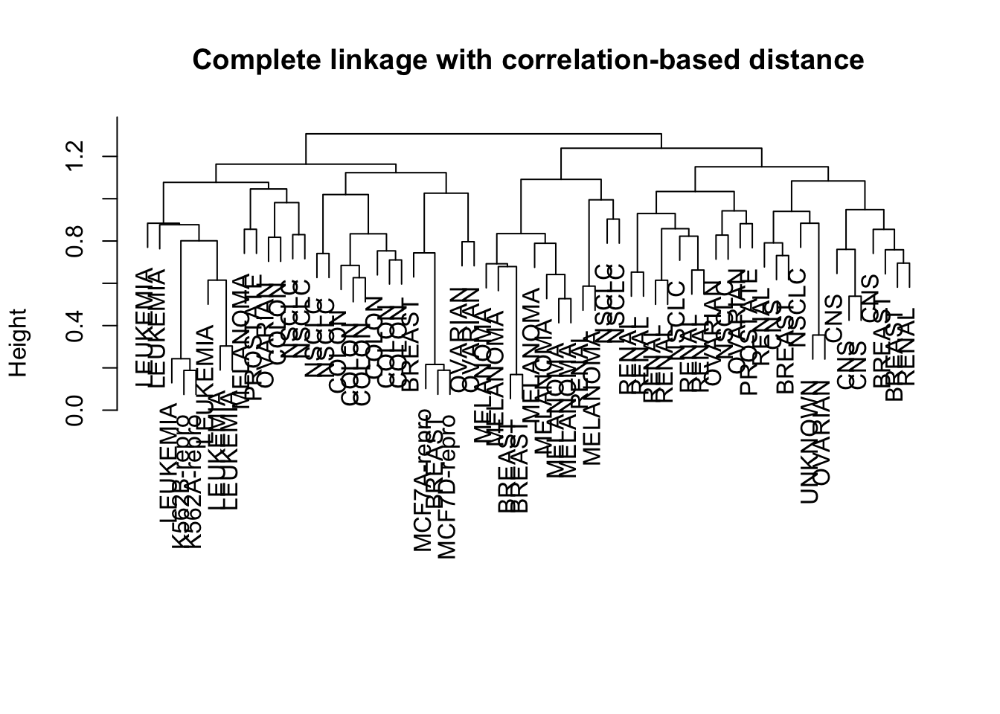
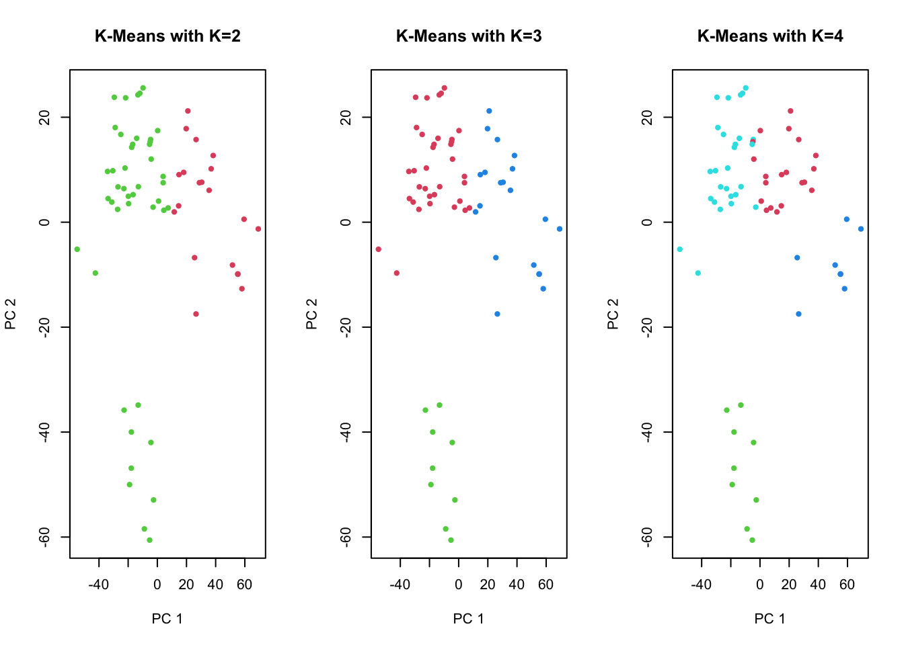
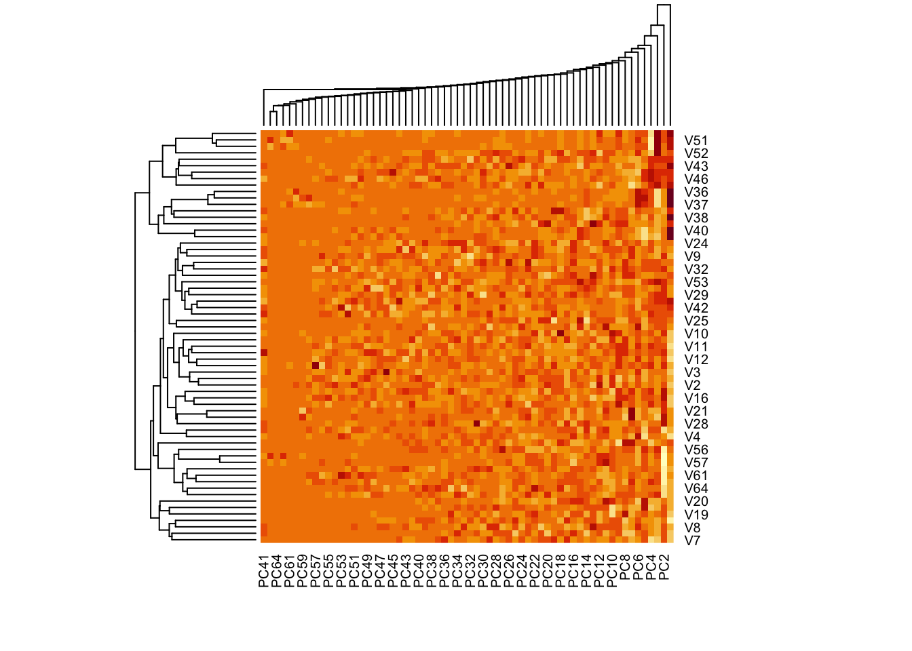
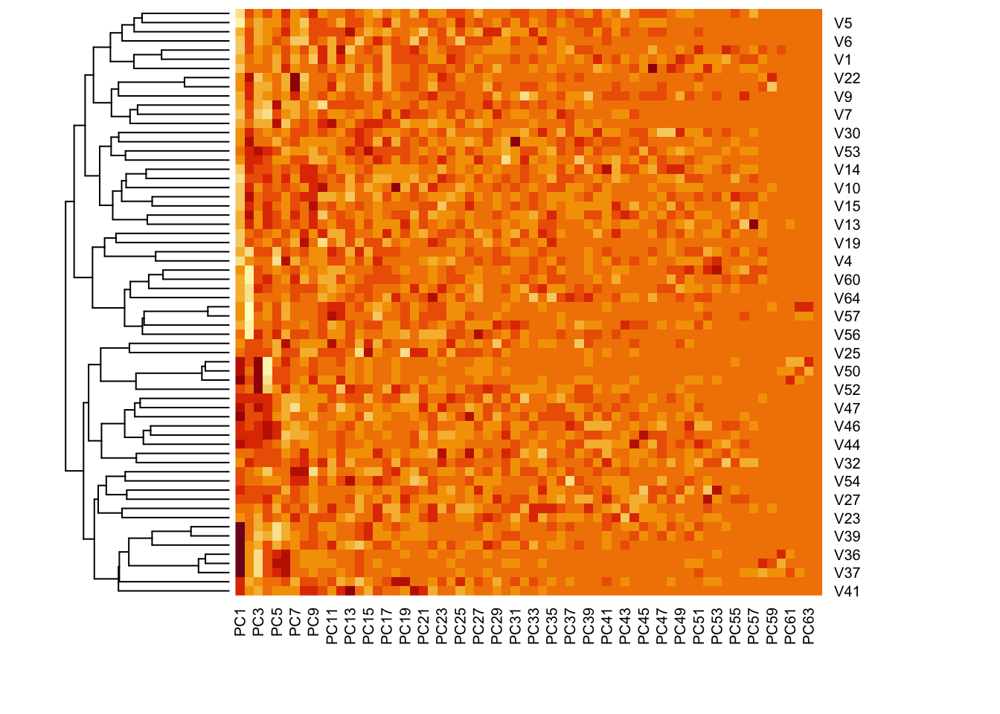
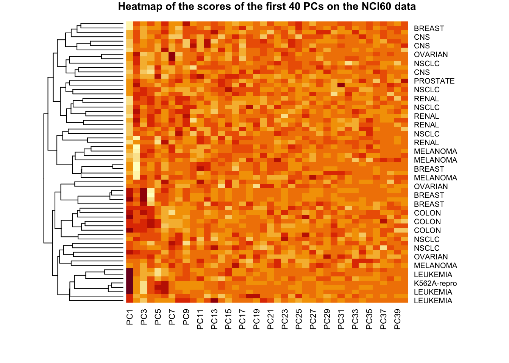

library(ISLR)
nci.labs <- NCI60$labs # Sample labels (tissue type)
nci.data <- NCI60$data # Gene expression data setR Lab (day 4): Clustering
Datasets
R script
Lab lecture
NCI60
Hierarchical clustering
We start by scaling the data, calculate the distance matrix (using the Euclidean distance), and then investigate different linkage methods.
# Scale the data to zero mean and unit variance:
sd.data <- scale(nci.data)
# Calculate the distance matrix (default = Euclidean):
data.dist <- dist(sd.data)
data.dist <- dist(sd.data, method="euclidean")# Perform clustering
hc.complete <- hclust(data.dist, method="complete")
# names(hc.complete)
plot(hc.complete, labels=nci.labs, main="Complete Linkage", xlab="", sub="")
# hc.complete$merge # order of aggregations of samples / clusters
# hc.complete$height # distance at which aggregations happen
# hc.complete$order # correct order of the samples for obtaining the plot
# hc.complete$labels # labels (numeric, since we don't know the original categories!)
# hc.complete$method
# hc.complete$call
# hc.complete$dist.methodDifferent linkage methods
hc.average <- hclust(data.dist, method="average")
hc.single <- hclust(data.dist, method="single")
plot(hc.average, labels=nci.labs, main="Average Linkage", xlab="", sub="")
plot(hc.single, labels=nci.labs, main="Single Linkage", xlab="", sub="")## First, we use cutree() to compare the results when the data are separated
## into either 2 or 4 clusters.
# Compare 2 clusters and 4 clusters:
hc.clusters <- cutree(hc.complete, c(2, 4))
table(hc.clusters[,"2"], hc.clusters[,"4"])
1 2 3 4
1 40 7 0 0
2 0 0 8 9# How are the labels distributed between clusters:
table(hc.clusters[,"4"], nci.labs) nci.labs
BREAST CNS COLON K562A-repro K562B-repro LEUKEMIA MCF7A-repro MCF7D-repro
1 2 3 2 0 0 0 0 0
2 3 2 0 0 0 0 0 0
3 0 0 0 1 1 6 0 0
4 2 0 5 0 0 0 1 1
nci.labs
MELANOMA NSCLC OVARIAN PROSTATE RENAL UNKNOWN
1 8 8 6 2 8 1
2 0 1 0 0 1 0
3 0 0 0 0 0 0
4 0 0 0 0 0 0# visualize the cuts
plot(hc.complete, labels=nci.labs, main="Complete Linkage", xlab="", sub="")
abline(h=140, col="red") # 4 clusters
abline(h=150, col="blue") # 2 clusters
Finally, we see what happens if we use unscaled data instead of scaled data, or if we use a correlation-based distance metric instead of the Euclidean distance.
Compare the dendrograms: How different are the resulting clusterings? Do you recognise subclusters that are consistent?
# Compare scaled data versus non-scaled data:
hc.unscaled <- hclust(dist(nci.data), method="complete")
par(mfrow=c(1,1))
plot(hc.unscaled, labels=nci.labs, main="Complete linkage with unscaled features", xlab="", sub="")
# Compare Euclidean distance with correlation-based distance:
dd <- as.dist(1-cor(t(sd.data)))
hc.corr <- hclust(dd, method="complete")
par(mfrow=c(1,1))
plot(hc.corr, labels=nci.labs, main="Complete linkage with correlation-based distance", xlab="", sub="")
K-means clustering
set.seed(4)
km.out4 <- kmeans(sd.data, 4, nstart=20)
km.out4$cluster V1 V2 V3 V4 V5 V6 V7 V8 V9 V10 V11 V12 V13 V14 V15 V16 V17 V18 V19 V20
4 4 4 4 4 4 4 4 4 4 4 4 4 4 4 4 4 4 4 4
V21 V22 V23 V24 V25 V26 V27 V28 V29 V30 V31 V32 V33 V34 V35 V36 V37 V38 V39 V40
4 4 4 1 1 4 1 4 1 4 4 1 1 3 3 3 3 3 3 3
V41 V42 V43 V44 V45 V46 V47 V48 V49 V50 V51 V52 V53 V54 V55 V56 V57 V58 V59 V60
3 1 1 1 1 1 1 1 1 1 1 1 1 1 1 2 2 2 2 2
V61 V62 V63 V64
2 2 2 2 Read the help file ?kmeans to understand what the argument nstart=20 does. Comparing an analysis with nstart=20 versus nstart=1 demonstrates how the cluster results can be improved if we allow more evaluations with different randomly chosen starting centroids.
# More evaluations with different starting centroids improve the clustering:
set.seed(3)
km.out <- kmeans(sd.data, 3, nstart=1)
km.out$tot.withinss[1] 375335.1km.out <- kmeans(sd.data, 3, nstart=20)
km.out$tot.withinss[1] 366350.6Compare with hierarchical clustering
# then, we can directly compare the k-means result (along rows)
# with the hierarchical clustering result (along columns)
table(km.out4$cluster, hc.clusters[,"4"], deparse.level=2) hc.clusters[, "4"]
km.out4$cluster 1 2 3 4
1 11 0 0 9
2 9 0 0 0
3 0 0 8 0
4 20 7 0 0We can visualise the K-means clustering results of high-dimensional data by using PCA for dimension reduction first. We plot the first two principal components and colour the data points (= individual cell lines) by their assigned cluster.
# first, run PCA again on the NCI60 data
pr.out <- prcomp(nci.data, scale=TRUE)
# more cluster options
km.out2 <- kmeans(sd.data, 2, nstart=20)
km.out3 <- kmeans(sd.data, 3, nstart=20)
# we can now visualise the K-Means results by labelling the data points
# in a plot of the scores of the first 2 principal components:
par(mfrow=c(1,3))
plot(pr.out$x[,1:2], col=(km.out2$cluster+1), main="K-Means with K=2",
xlab="PC 1", ylab="PC 2", pch=20)
plot(pr.out$x[,1:2], col=(km.out3$cluster+1), main="K-Means with K=3",
xlab="PC 1", ylab="PC 2", pch=20)
plot(pr.out$x[,1:2], col=(km.out4$cluster+1), main="K-Means with K=4",
xlab="PC 1", ylab="PC 2", pch=20)
Heatmap
## We use the scores of the PCA on the NCI60 data, to reduce dimension
# default choices
heatmap(pr.out$x)
# I use the previous dendrogram for better ordering of the patients,
# and I remove the dendrogram for the components
heatmap(pr.out$x, Rowv = as.dendrogram(hc.corr), Colv = NA)
# I now plot less components for the sake of clarity,
# I add the patient's tumor type, and I give a title
par(cex.main = .7)
heatmap(pr.out$x[,1:40], Rowv = as.dendrogram(hc.corr), Colv = NA,
labRow = nci.labs, main = 'Heatmap of the scores of the first 40 PCs on the NCI60 data')
Gene expression data
# load in the data using read.csv(). You will need to select header=F.
data <- read.csv("data/Ch12Ex13.csv", header=FALSE)
data <- t(data) # want each row to represent a sample ... should have n=40 samples/rowsHierarchical clustering
data.dist <- dist(data) # need to compute the distance matrix
hclust.df <- hclust(data.dist, method="complete" )
#alternatives:
#hclust.df <- hclust( D, method="average" )
#hclust.df <- hclust( D, method="single" )# find the clusters
predicted <- cutree( hclust.df, k=2 )
true.groups <- c( rep(0,20), rep(1,20) )
# How well does our clustering predict health vs. diseased
table(predicted, true.groups ) true.groups
predicted 0 1
1 20 0
2 0 20K-means
predicted.kmean <- kmeans(data, 2, nstart=20)$cluster
table(predicted.kmean, true.groups ) true.groups
predicted.kmean 0 1
1 0 20
2 20 0